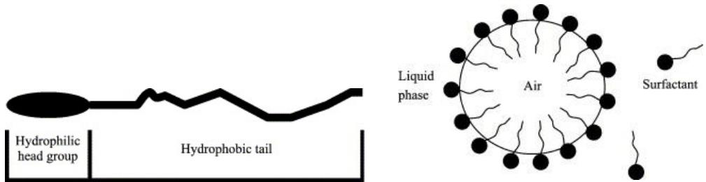
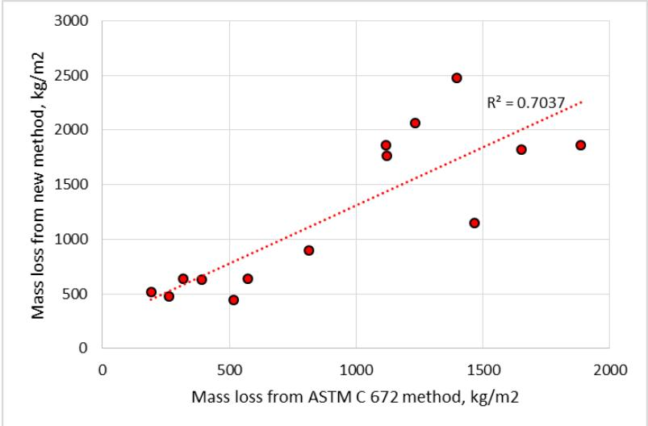
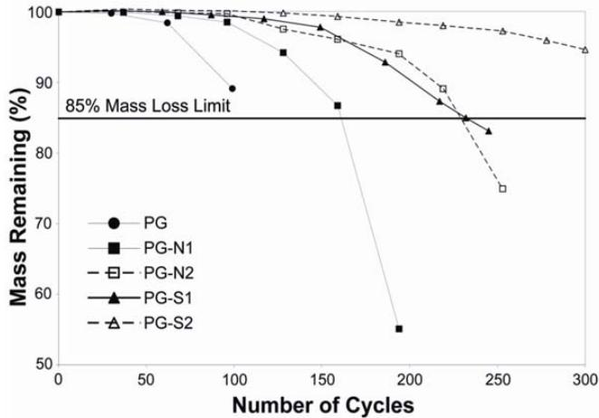
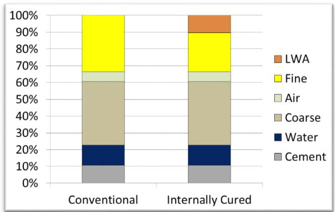
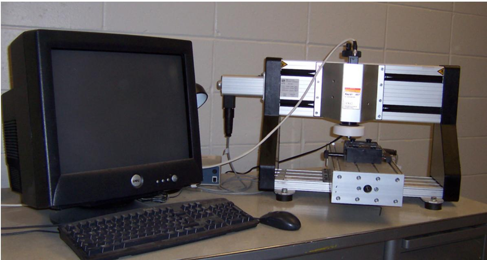
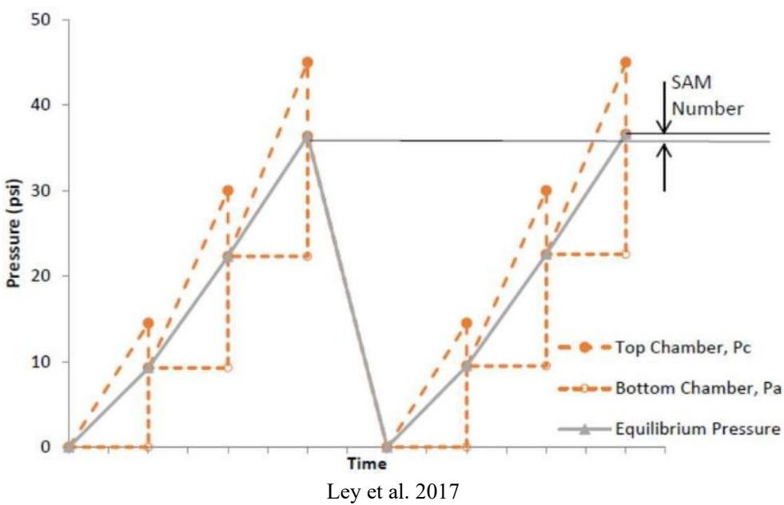

Air Entraining Agent
Air-entraining agents are a specific subclass of chemical admixtures for concrete that introduce microscopic air bubbles into mixtures to enhance freeze-thaw durability [2]. These agents stabilize small air voids, ranging from 0.002 to 0.05 inches in diameter, which provide spaces for ice expansion during freezing, thereby relieving hydraulic and osmotic pressures caused by the expansion of freezing pore water [1], [2]. Satisfactory frost protection is generally achieved when total entrained air content falls within a range of 4% to 8% by volume of the concrete mixture [2]. While essential for durability, their use requires careful consideration of compatibility with other materials to avoid adverse interactions that may compromise strength or stability [14]. Chemically, these agents are defined as salts of wood resins, synthetic detergents, sulfonated lignin, petroleum acids, proteinaceous materials, fatty and resinous acids, alkylbenzene sulfonates, or sulfonated hydrocarbons [2]. Notable examples include Micro Air®, a synthetic air-entraining admixture manufactured by BASF Admixtures, whereas Vinsol Resin is a traditional agent derived from pine wood resin [3].
Sources (36)
Sub-concepts (2)
Introduction to Air-Entraining Agents (AEA)
Air-entraining agents improve fresh concrete properties by enhancing flowability and reducing bleeding and segregation, while also mitigating expansion associated with sulfate attack and alkali-silica reaction [4]. The addition of air entraining agents reduces bleeding rates in fresh concrete because the microscopic bubbles create a physical barrier that impedes the upward migration of free water [5]. Furthermore, these agents mitigate plastic shrinkage cracking by maintaining a thin layer of bleed water that delays capillary evaporation; however, excessive bleeding caused by high AEA or fly ash content can lead to aggregate segregation and settlement cracks [6].
Vinsol resin is a traditional instance of air-entraining agent, historically based on abietic acid salts [7]. It functions as an organic surfactant that reduces surface tension to stabilize microscopic air voids within the cement paste matrix. This stabilizing action results in the formation of discrete, spherical, and uniformly distributed air bubbles dispersed throughout the mixture [7].
Regarding their composition, modern air-entraining agents have largely transitioned from traditional Vinsol resin to synthetic surfactants based on blends of alkyl sulphonates, olefin sulfonates, diethanolamines, alcohol ethoxylates, and betains [7].

Basic chemical nature and the distribution of AEA surfactant molecules at the water-air interface [7]Micro Air® is a specific synthetic surfactant formulation that functions as an air-entraining agent by reducing surface tension to stabilize microscopic air voids within concrete. This stabilization of small air bubbles helps protect the material against damage induced by the expansion of freezing pore water, thereby improving durability in freeze-thaw conditions [2]. While natural and synthetic agents produce different void systems, Micro Air® serves as a distinct instance fulfilling this functional role [30].
Void Size Distribution Indicators
Cumulative void-size distribution curves serve as a durability indicator where a curve terminating at approximately 2% cumulative mortar air content signifies failure in ASTM C 666 testing, whereas a curve reaching about 9% indicates negligible expansion over 1000 freeze-thaw cycles [8]. A desirable threshold for freeze-thaw protection is reached when a cumulative void-size distribution curve achieves at least 6% mortar air content at a bin size of 316 microns, representing approximately 3.8% entrained air on an Iowa DOT C-3 mix basis [8]. To ensure effectiveness, the final segment of the void distribution curve, specifically between 500 and 1000 microns, should be nearly flat to indicate minimal small entrapped-air voids that do not protect against frost damage but artificially inflate total air content [8]. The effective air void size required for preventing freeze-thaw damage consists of bubbles with a diameter less than 300 micrometers [2], and increasing the proportion of air voids smaller than 300 micrometers in mortar increases the specific surface area, which correlates with a finer air void system that is generally more resistant to freeze-thaw damage [5]. Specific surface, defined as the ratio of air voids’ surface area to their volume, serves as a critical parameter for freeze-thaw durability because smaller voids exhibit higher specific surface values [9]; an increase in specific surface indicates a decrease in bubble diameter, which increases the number of bubbles per unit volume and consequently reduces the spacing factor [9].
 Freeze-Thaw Results for GA, OH, OK, IN, LA, MN, NY, and SD [9]
Freeze-Thaw Results for GA, OH, OK, IN, LA, MN, NY, and SD [9]
Air-entraining agents lower the surface tension of water to facilitate bubble formation, with uniform dispersion achieved by blending surfactants that increase the stability of the interfacial layer between air and water [7]. Alternatively, superabsorbent polymers (SAP) can function as physical air voids after desorbing water, creating a more stable air void system compared to traditional chemical AEA while mitigating the adverse effects of additional mixing water on mechanical performance [10]. In other cementitious systems, polymer latexes typically contain spherical polymer particles ranging from 50 to 500 nm in size, suspended in water by surface-active agents that inherently entrain large amounts of air [11]; because these surface-active agents naturally develop large amounts of entrained air, the addition of air-detraining agents is often necessitated to reduce excess air content [11]. Despite initial stability, air void systems can degrade over time due to secondary ettringite deposition during saturation with deicer solutions, which fills finer air void spaces and renders the system ineffective against cyclic freeze-thaw action even if the original parameters were resistant [12]. Such secondary ettringite deposition can line and fill entrained voids, compromising the effectiveness of the air void system and reducing concrete durability even when the initial air system is consistent with current technology [13]. Specifically, secondary ettringite formation can fill entrained air voids within approximately 10 to 20 mm of joint planes during saturation with deicer solutions, effectively reducing the protective air content from values like 6.9% down to 2.5% and increasing the spacing factor beyond durable limits [12].
Key Requirements for Freeze-Thaw Durability
For concrete with AEA, good F-T durability requires an air content ≥ 6% measured by ASTM C231 pressure method and a spacing factor ≤ 0.28 mm measured by AVA, or ≤ 0.22 mm measured by RapidAir; all concrete mixes meeting these criteria achieved durability factors > 85% in the Wang et al. 2009 study [1]. Raising the required mix air content to exceed six percent ensures an acceptable bubble spacing factor, thereby improving freeze-thaw durability despite a minor reduction in compressive strength [13]. Air content and bubble spacing significantly affect permeability and pavement performance, including freeze-thaw resistance, necessitating field-ready testing methods that can measure these properties after placement [14]. In field-extracted cores, air-void spacing factors of 0.008 inches or less, when combined with adequate entrained-air volume, are considered indicative of good freeze-thaw deterioration resistance [15]. Furthermore, latex-modified concrete can achieve superior freeze-thaw scaling resistance even when its air void spacing factor does not meet the conventional requirement of less than 0.200 mm, indicating a fundamentally different protective mechanism [11].
 Entrained air in the concrete vs. spacing factor [13]
Entrained air in the concrete vs. spacing factor [13]
In non-air entrained concrete, the limiting water-to-binder ratio to achieve durability is 0.26 for Type IP cement, whereas Type I cement with Class C fly ash requires a w/b of 0.19 [1]. Additionally, non-air entrained Type I cement with Class C fly ash requires a 28-day compressive strength of 70.7 MPa (10,246 psi) to be freeze-thaw durable, while Type IP cement requires 82 MPa (11,880 psi) [1]. Durability factors in non-air entrained concrete also remain above 85% when rapid chloride permeability is 608 Coulombs or less for Type IP cement and 185 Coulombs or less for Type I cement with Class C fly ash [1]. Chemical factors also play a role, as deicing chemicals based on magnesium and calcium chloride react with hydroxide hydration products to form expansive calcium oxychloride compounds that decompose at room temperature [16]. Aggregate-related freeze-thaw deterioration can be mitigated by ensuring the maximum aggregate size remains below a critical threshold calculated from tensile strength and freezing rate, as ice propagation within aggregate particles is significantly faster than in the surrounding paste [17]. This mechanism requires adequate paste thickness to accommodate water expelled from the aggregate during freezing without rupturing the interfacial transition zone [17]. The required paste thickness surrounding an aggregate particle depends on the volumetric fraction of freezable water within that aggregate and the air content of the paste, which must be sufficient to absorb expelled water without causing rupture; thus, paste failure is controlled by a combination of aggregate size, porosity, and the specific air content available in the surrounding mortar matrix [17].
 Durability factor as a function of w/b [1]
Durability factor as a function of w/b [1]
Compatibility with Cementitious Materials and SCMs
The effectiveness of AEA depends on the air void system (amount, size distribution, spacing), rather than on the type of cementitious material. However, Supplementary Cementitious Materials can interact with AEA; for instance, I-FA (Type I + Class C fly ash) produced stable air entrainment with consistent AEA dosage, whereas IP (Type IP, 25% Class F fly ash) required increasing AEA dosage with decreasing w/b [1]. In ternary mixtures containing blended cements such as Type IP and Type ISM, the resulting air void structure is generally superior compared to other cement types [5]. The use of Supplementary Cementitious Materials can create an unstable air void system in freshly mixed concrete, a problem that is exacerbated when certain chemical admixtures are also used in the mixture [14]. SCMs such as fly ash, slag cement, and silica fume are commonly used to replace 5% to 15% of portland cement in high-performance concrete applications [18]. Silica fume’s high surface area often necessitates the use of high-range water reducers to manage workability, while its carbon content can interfere with air-entrainment stability [18]. Similarly, metakaolin incorporation increases the demand for air-entraining admixtures to a degree comparable to that observed in silica fume concrete mixes [2].
 Effect of admixture combination on the percent of air voids less than 300 μm for mixtures containing large amounts of Class C fly ash [2]
Effect of admixture combination on the percent of air voids less than 300 μm for mixtures containing large amounts of Class C fly ash [2]
The unburned carbon in fly ash adsorbs air-entraining agents, necessitating higher AEA dosages to achieve adequate air voids; this demand increases proportionally with the loss on ignition (carbon content) of Class F fly ash [6]. Consequently, high-calcium Class C fly ash generally requires less air-entraining admixture than low-calcium Class F fly ash, as the latter’s higher carbon content increases AEA demand [6]. In concrete mixtures incorporating Class C fly ash at replacement levels between 15% and 20%, air-entraining agents are required to achieve average hardened air contents ranging from 6% to 7.8% to ensure durability [19]. Specifically, the presence of Class C fly ash at 15% to 20% replacement levels necessitates specific AEA dosing to maintain target air contents between 6% and 7.8%, as observed in field-constructed pavements with water reducer usage [19]. To address these issues, calorimetry testing serves as a diagnostic tool for identifying AEA incompatibility by comparing the resulting heat evolution curve against that of a typical mix under similar environmental conditions [20]. Additionally, the incorporation of SAP into concrete mixtures can result in slightly higher initial air contents than control mixes due to the combined effects of added mixing water and the polymer itself, while also reducing slump loss over time through the release of water from swollen particles under vibration [10].
Tradeoffs and Challenges in Mix Design
Polycarboxylate high-range water reducers can aid in generating an adequate air void system when used with high loss on ignition Class F fly ash, as these polymers are known to entrain air [2]. While AEA increases concrete porosity while maintaining F-T durability, it also reduces concrete compressive strength because bubbles create voids. Furthermore, low w/b concrete is difficult to air-entrain because dry mixtures and high binder content hinder stable air void formation. The use of synthetic or non-vinsol resin-based air entraining agents can lead to bubble clustering and coalescing, a phenomenon often attributed to their lower solubility compared to traditional vinsol resins [13]. Air bubble coalescence may also result from absorptive or dry aggregate, where water movement carries the less-soluble admixture to the aggregate surface, causing disproportionate accumulation and bubble formation near the aggregate [13].
Overdosing air-entraining agents alongside high-range water reducers can cause significant delays in cement hydration, shifting the primary heat generation peak from approximately 12 hours to 24 hours and introducing a secondary hydration peak around 60 hours that elongates final set time [21]. This incompatibility is particularly evident in low w/c mixtures (e.g., 0.30) where standard robust testing at higher w/c ratios (e.g., 0.45) fails to detect the issue [21]. In internally cured concrete mixtures, the air content target remains at 6.5% with an acceptable range of 5% to 8%, measured using standard methods like AASHTO T 152 or T 196, ensuring that the internal curing process does not compromise the freeze-thaw protection provided by entrained air [22]. Finally, an optimum latex concentration of approximately 15% solid polymer by weight of cement is recommended to balance air void system performance with cost considerations [11].
 Conventional curing compared to internal curing [22]
Conventional curing compared to internal curing [22]
AEA Impact on Slag Cement Scaling
Because selection matters, the AEA type significantly affects scaling resistance of slag cement concretes, confirming Chatterji (2003) that some AEAs perform better than others [23]. In this work, the correlation between slag cement content and scaling performance was less marked than that reported by Hooton et al. (2012) [24], although increasing the spacing factor did reflect better scaling performance in both tests, even though correlation was better for data from the old method [24]. Correlation between air content and scaling performance was poor in all cases [24], noting that air contents of Mixtures 2 and 3 were low, while spacing factors of Mixtures 2 through 7 were greater than 0.2 mm measured using ASTM C 457 [24]. When recycled asphalt pavement is incorporated into concrete base courses, the inherent air-entraining properties of the aged asphalt binder significantly reduce the required dosage of chemical AEA [25]. Austria permits up to 20 percent asphalt-bound material in new concrete mixtures designed for lower lifts of two-lift construction, allowing the use of concrete previously overlaid with hot-mix asphalt, which expands potential sources of recycled aggregate while managing the air-entraining effects of aged asphalt binders [26].

Comparison between data from ASTM C 672 and new test methods for standard curing [24]Recycled coarse aggregate (RCA) derived from previously air-entrained concrete improves freeze-thaw performance in new mixes compared to non-air-entrained sources, as residual entrapped air voids contribute to durability; however, removing the old mortar from RCA yields less positive impact on freeze-thaw resistance than retaining the original air-entrainment within the aggregate particles [26]. The presence of old mortar in RCA creates a more permeable transition zone between the original virgin aggregate and the attached paste, increasing susceptibility to carbonation and chloride penetration, though mineral admixtures can mitigate this by densifying the new mortar matrix surrounding the RCA particles [26]. Proper separation of recycled aggregate material based on origin, strength, and air content is essential for maintaining consistency in new concrete production, allowing contractors to match RCA quality with appropriate application requirements [26]; specifically, the Japanese Type H classification for recycled coarse aggregate defines specific quality standards that dictate appropriate applications based on origin, strength, and air content characteristics to determine if RCA is suitable for structural concrete or lower-lift paving applications [26]. Research indicates that replacing virgin coarse aggregate with up to 30 percent recycled aggregate has little to no negative effect on concrete properties when proper mixture proportioning is employed [26], and Japanese research concludes that replacing up to 20 percent of coarse aggregate with recycled material does not adversely affect concrete properties when the maximum aggregate size is limited to a range of 16-20 mm to manage higher water absorption and irregular shape characteristics [26]. The strength of new concrete incorporating recycled aggregate is influenced by both the water-to-cementitious materials ratio of the new mix and the properties of the original concrete from which the RCA was processed, meaning performance cannot be predicted solely based on mixture design parameters [26]. Additionally, recycled aggregate concrete may experience alkali-silica reaction (ASR), which can be mitigated through reduced water-to-cementitious materials ratios and the addition of mineral admixtures [26].
Adequate air entrainment is a critical factor in extending the service life of concrete overlays, with well-performing pavements achieving a Pavement Condition Index (PCI) of 60 at approximately 45 years compared to only 27 years for deteriorated projects [27]. In pervious concrete, air entraining agents are employed to enhance freeze-thaw durability despite the material’s high void ratio (14% to 31%) and low compressive strength range (800 psi to 4000 psi) [28]. The National Ready Mix Concrete Association (NRMCA) recommends an air entrainment level of 4% to 8% with a spacing factor of 0.01 inches for pervious concrete to ensure satisfactory freeze-thaw resistance [29], and while latex polymers possess inherent air-entraining capabilities, mixes relying solely on latex exhibit lower freeze-thaw durability compared to those using a standard chemical AEA [29]. The addition of fine sand, typically comprising 5% to 10% of the coarse aggregate mass in European and Japanese pervious concrete mixes, improves both strength and durability when combined with air entrainment [29]. In pervious concrete, air entrainment increases the volume of paste or mortar by filling voids between aggregate particles, which reduces overall porosity and significantly decreases water permeability [30]; specifically, adding air entraining agents can increase compressive strength from 16.1 MPa to 24.4 MPa while decreasing permeability from 3,492 cm/hr to 72 cm/hr [30]. The permeability of pervious concrete typically ranges from 3 gal/ft²/min (0.2 cm/s) to 17 gal/ft²/min (1.2 cm/s), a parameter significantly reduced by air entrainment [31], while average pore sizes typically range from 2 mm to 8 mm with a void ratio of 15% to 35% by volume [31].

Freeze-thaw durability of the pea gravel mixtures [30]Air-entraining agents are required for freeze-thaw resistance in self-compacting slipform concrete (SFSCC) and also benefit the flowability of the concrete by reducing the thixotropy of cement-based materials, thereby improving shape-holding ability [32]. In roller-compacted concrete, synthetic detergent-based air-entraining agents are particularly effective at entraining substantial amounts of air with dosages ranging from 0 to 0.7% capable of producing up to 11% air content, and they provide the best finishibility compared to other types such as modified resins or water-soluble hydrocarbons [7]. Internal curing using prewetted lightweight fine aggregate (LWFA) can reduce autogenous shrinkage and plastic shrinkage cracking while maintaining freeze-thaw durability comparable to conventional concrete, provided the air-entraining agent dosage is maintained at standard levels [22]. Finally, in the production of electrically conductive concrete (ECON), air-entraining admixtures can significantly increase hardened electrical resistance by hindering electron flow through the carbon fiber network, necessitating dosage adjustments to maintain target resistivity values [33].

Conceptual illustration of volumetric components in a plain and internally cured mixture [22]Field Measurement, Testing, and Identification Methods
The presence of large air voids in concrete can significantly reduce rebound hammer test results, as the plunger may strike an air void and produce a lower rebound number than expected for the actual compressive strength [34]. In pervious concrete, standard pressure or volumetric air meters fail to provide useful data due to the material’s large interconnected porosity between aggregate particles [30]. Regarding recycled aggregates, RCA from demolished concrete can exhibit variable air content depending on the original mixture design, requiring laboratory testing of core samples to verify durability properties when sourced from materials recycling companies; this variability necessitates careful quality control to ensure consistent freeze-thaw resistance in new concrete applications [26]. Field monitoring of plastic air content before and after paving operations reveals that slipform paving can cause a loss of two to three percent entrained air, with hardened core measurements typically aligning closely with post-paver plastic readings [8]. Furthermore, in-service concrete cores often exhibit marginal to poor air-void system characteristics despite adequate fresh concrete measurements, with spacing factors frequently exceeding the 0.012-inch threshold for durability [16]. When recalculating hardened air content by excluding entrapped voids identified in core samples, the measured value can drop significantly, revealing that a rapidly rising upper limb on distribution curves indicates excessive non-protective entrapped air [8].
Various methods exist to analyze these void structures. The Air Void Analyzer (AVA) determines bubble size distribution by measuring the rate at which air bubbles rise through a viscous liquid, applying Stokes’ Law where larger bubbles ascend faster than smaller ones [9]. The AVA testing protocol involves extracting a 20 cm³ mortar sample and injecting it into a viscous liquid, where weight changes are recorded for 25 minutes or until no change occurs for three consecutive minutes [9]. Air voids smaller than 300 microns demonstrate a strong correlation between air content and spacing factor in AVA measurements, whereas larger bubbles show poor correlation [9]; notably, there was poor correlation between AVA and C 457 spacing factor measurements [24]. The Air Void Analyzer measures air voids equal to or less than 2 mm in size, capturing total air content that is generally lower than ASTM C231 measurements because it excludes larger entrapped voids [1]. The RapidAir device identifies air voids under an optical microscope after filling them with zinc oxide paste, providing data on spacing factor and specific surface for hardened concrete samples [1]; it measures total air content for voids up to 4 mm in diameter by scanning polished cross-sections where air voids are filled with white zinc oxide paste against a black-stained matrix [30]. Petrographic analysis using scanning electron microscopy with backscattered-electron detectors can be employed to measure air-void parameters and estimate the apparent specific surface of hardened concrete specimens [15], while the linear traverse method is a standard petrographic technique used for determining air-void parameters and content in hardened concrete sections polished perpendicular to the horizontal plane [15].

Rapid Air Analyzer [9]The Super Air Meter (SAM) provides a rapid field assessment of air structure where a SAM value below 0.2 is associated with a spacing factor below 0.008 inches, allowing for immediate verification of mix robustness before placement [35]. The SAM method utilizes sequential pressurization at 0.21 MPa (30 lb/in²) and 0.31 MPa (45 lb/in²), where the difference in equilibrium pressure between two sequences is reported as the SAM number to infer air-void system quality [16]. The SAM method correlates with ASTM C457 spacing factors and durability factors assessed via AASHTO T 161, providing a rapid alternative to microscopic analysis [16]. Regarding standards, AASHTO R 101-22 specifies a design alternative requiring a SAM number less than or equal to 0.20 with an air content greater than 4%, while construction standards allow a higher limit of 0.30 to account for variability [16]. Additionally, the SAM can be used to permit a reduction in measured air content if the SAM number is less than 0.20, indicating that the air void system remains robust even if total air volume appears lower due to internal curing effects [22]. In experimental mortar mixes, the air-entraining agent MB-AE 90 from Master Builder Inc. was utilized to evaluate material compatibility and heat evolution characteristics [20].

Sequential pressures applied in the SAM and calculation of the SAM number [16]Air permeability testing using pressurized air on sealed concrete discs can determine diffusion parameters, where an increasing air permeability index (API) indicates lower air permeability and better durability against carbonation. An API between 9.5 and 10.0 is classified as good, while values below 9.0 are considered very poor [36]. Penetrating sealers can act as pore blockers or pore liners; some types like SoTa and SME-PS significantly reduce air permeability by blocking pores, while others like LS and SC exhibit pore-lining behavior without influencing air permeability [36]. Hydrophobic sealers can transmit vapor to decrease the saturation level of concrete elements not in continuous contact with water, but may adversely affect durability when concrete is continuously saturated due to a pumping effect that accelerates reaching critical degree of saturation [36]. Because the air permeability test evaluates gas movement rather than liquid movement, it is less useful for characterizing the performance of concretes treated with sealers compared to desaturation tests [36].
 Air (gas) permeability index for concrete [36]
Air (gas) permeability index for concrete [36]
Placement, Sampling, and Environmental Effects
Placement activities such as slipform paving can reduce the quantity of entrained air in concrete by up to 2 percent, a reduction that is often not captured because standard tests are performed on samples taken at the plant or before paving rather than behind the paver [14]. While sampling location significantly affects ASTM C231 measurements, it has minimal impact on AVA results, indicating that small entrained bubbles remain stable under vibration while larger entrapped voids are removed [4].
 Air-void analyzer [4]
Air-void analyzer [4]
Furthermore, air entrainment in roller-compacted concrete requires higher mixing energies, longer mixing cycles, and reduced batch sizes because pugmill mixer technology cannot effectively achieve air entrainment [7]. To ensure durability, SAP particles must possess sufficient physical stability and mechanical strength during mixing and placement, which is often achieved through high cross-linking density or surface cross-linking agents like ethylene glycol diglycidyl ether to prevent gel rupture while maintaining swelling capacity [10].
Related Concepts
- Freeze-Thaw Durability
- Air Void Analyzer
- Supplementary Cementitious Materials
- Low-Permeability Concrete
- Vinsol Resin
- Micro Air®
- Chemical Admixtures for Concrete
References
- K. Wang, G. Lomboy, and R. Steffes, "Investigation into Freezing-Thawing Durability of Low-Permeability Concrete with and without Air Entraining Agent," National Concrete Pavement Technology Center, Ames, IA, 2009. [Online]. Available: https://www.intrans.iastate.edu/wp-content/uploads/2018/03/low-permeability-concrete.pdf
- P. Tikalsky, V. Schaefer, K. Wang, B. Scheetz, T. Rupnow, A. St. Clair, M. Siddiqi, and S. Marquez, "Development of Performance Properties of Ternary Mixes, Phase 1," Center for Transportation Research and Education, Ames, IA, Rep. TPF-5(117), 2007. [Online]. Available: https://www.intrans.iastate.edu/research/completed/development-of-performance-properties-of-ternary-mixes-phase-1/
- P. Taylor, P. Tikalsky, K. Wang, G. Fick, and X. Wang, "Development of Performance Properties of Ternary Mixtures: Field Demonstrations and Project Summary," National Concrete Pavement Technology Center, Ames, IA, Rep. TPF-5(117), 2012. [Online]. Available: https://www.intrans.iastate.edu/wp-content/uploads/2018/03/ternary_final_w_cvr.pdf
- K. Wang, M. Mohamed-Metwally, F. Bektas, and J. Grove, "Improving Variability and Precision of Air-Void Analyzer (AVA) Test Results ..., Phase I," Center for Transportation Research and Education, Ames, IA, 2008. [Online]. Available: https://www.cptechcenter.org/wp-content/uploads/2018/03/ava-1.pdf
- P. Tikalsky, P. Taylor, S. Hanson, and P. Ghosh, "Development of Performance Properties of Ternary Mixtures: Laboratory Study on Concrete," National Concrete Pavement Technology Center, Ames, IA, Rep. TPF-5(117), 2011. [Online]. Available: https://www.intrans.iastate.edu/research/completed/development-of-performance-properties-of-ternary-mixtures-laboratory-study-on-concrete/
- B. Shafei, P. Taylor, B. Phares, and M. Kazemian, "Fiber-Reinforced Concrete for Bridge Decks," Bridge Engineering Center, Iowa State University, Ames, IA, Rep. TR-767, 2021. [Online]. Available: https://www.intrans.iastate.edu/wp-content/uploads/2021/12/fiber-reinforced_concrete_in_bridge_decks_w_cvr.pdf
- C. V. Hazaree, H. Ceylan, P. Taylor, K. Gopalakrishnan, K. Wang, and F. Bektas, "Use of Chemical Admixtures in Roller-Compacted Concrete for Pavements," National Concrete Pavement Technology Center, Ames, IA, 2013. [Online]. Available: https://www.intrans.iastate.edu/wp-content/uploads/2018/03/rcc_admixture_w_cvr1.pdf
- S. Schlorholtz, K. Wang, J. Hu, and S. Zhang, "Materials and Mix Optimization Procedures for PCC Pavements," CTRE, Iowa State University, Ames, IA, Rep. TR-484, 2006. [Online]. Available: https://www.intrans.iastate.edu/wp-content/uploads/2018/03/mco-final.pdf
- J. Grove, G. Fick, T. Rupnow, and F. Bektas, "Material and Construction Optimization for Prevention of Premature Pavement Distress in PCC Pavements," National Concrete Pavement Technology Center, Ames, IA, Rep. TPF-5(066), 2008. [Online]. Available: https://www.intrans.iastate.edu/wp-content/uploads/2018/03/mco-final.pdf
- B. Zhou, P. Taylor, and K. Wang, "Superabsorbent Polymer in Concrete to Improve Durability," National Concrete Pavement Technology Center, Iowa State University, Ames, IA, Rep. TR-793, 2025. [Online]. Available: https://www.intrans.iastate.edu/wp-content/uploads/2025/04/superabsorbent_polymer_in_concrete_w_cvr.pdf
- K. Wang, B. M. Shankaramurthy, A. Anand, Y. Sargam, K. Freeseman, and B. Phares, "Performance Evaluation of Very Early Strength Latex-Modified Concrete (LMC-VE) Overlay," Institute for Transportation, Iowa State University, Ames, IA, Rep. TR-771, 2024. [Online]. Available: https://bec.iastate.edu/wp-content/uploads/2024/10/performance_evaluation_of_LMC-VE_overlay_w_cvr.pdf
- P. Taylor, L. Sutter, and J. Weiss, "Investigation of Deterioration of Joints in Concrete Pavements," National Concrete Pavement Technology Center, Ames, IA, Rep. TPF-5(224), 2012. [Online]. Available: https://www.intrans.iastate.edu/wp-content/uploads/2018/03/joint_deterioration_penetrating_sealers_field_study_w_cvr.pdf
- J. Grove, F. Bektas, and H. Gieselman, "Southeast Michigan Local Road Concrete Pavement Durability Study," National Concrete Pavement Technology Center, Ames, IA, 2006. [Online]. Available: https://www.cptechcenter.org/wp-content/uploads/2018/03/mi_pavement_durability.pdf
- D. Harrington, R. Rasmussen, D. Merritt, T. Cackler, and P. Taylor, "Long-Term Plan for Concrete Pavement Research and Technology—The Concrete Pavement Road Map (Second Generation): Volume II, Tracks (FHWA-HRT-11-070)," National Center for Concrete Pavement Technology, Iowa State University, Ames, IA, 2012. [Online]. Available: https://www.fhwa.dot.gov/publications/research/infrastructure/pavements/pccp/11070/11070.pdf
- S. Schlorholtz and R. D. Hooton, "Deicer Scaling Resistance ... Containing Slag Cement, Phase 1: Site Selection and Analysis of Field Cores," National Concrete Pavement Technology Center, Ames, IA, Rep. TPF-5(100), 2008. [Online]. Available: https://www.cptechcenter.org/wp-content/uploads/2018/03/schlorholtz_deicing_phase1.pdf
- J. Gross, J. Weiss, T. Ley, P. Taylor, N. Weitzel, T. Van Dam, G. Smith, and C. Jones, "Performance-Engineered Concrete Paving Mixtures," National Concrete Pavement Technology Center, Iowa State University, Ames, IA, Rep. TPF-5(368), 2022. [Online]. Available: https://www.intrans.iastate.edu/wp-content/uploads/2023/04/performance-engineered_concrete_paving_mixtures_w_cvr.pdf
- F. Bektas, K. Wang, and J. Ren, "Carbonate Aggregate in Concrete," Institute for Transportation, Ames, IA, 2015. [Online]. Available: https://www.intrans.iastate.edu/wp-content/uploads/2018/03/201514.pdf
- S. Schlorholtz, "Development of Performance Properties of Ternary Mixes: Scoping Study (Phase 1)," Center for Portland Cement Concrete Pavement Technology, Iowa State University, Ames, IA, Rep. DTFH61-01-X-00042 (Project 13), 2004. [Online]. Available: https://www.cptechcenter.org/wp-content/uploads/2018/03/ternary_mixes.pdf
- H. Ceylan, S. Kim, Y. Zhang, S. Yang, O. Kaya, K. Gopalakrishnan, and P. Taylor, "Prevention of Longitudinal Cracking in Iowa Widened Concrete Pavement," Institute for Transportation, Ames, IA, Rep. TR-700, 2018. [Online]. Available: https://www.intrans.iastate.edu/wp-content/uploads/2018/07/longitudinal_cracking_prevention_in_widened_concrete_pvmt_w_cvr.pdf
- K. Wang, Z. Ge, J. Grove, J. M. Ruiz, R. Rasmussen, and T. Ferragut, "Simple and Rapid Test for Monitoring the Heat Evolution of Concrete Mixtures, Phase 2," Center for Transportation Research and Education, Ames, IA, 2007. [Online]. Available: https://www.intrans.iastate.edu/wp-content/uploads/2018/03/calorimeter.pdf
- K. Wang, J. M. Ruiz, J. Hu, Z. Ge, Q. Xu, J. Grove, and R. Rasmussen, "Simple and Rapid Test for Monitoring the Heat Evolution ..., Phase III," National Concrete Pavement Technology Center, Ames, IA, 2008. [Online]. Available: https://www.intrans.iastate.edu/wp-content/uploads/2018/03/CalorimeterReportPhaseIII.pdf
- W. J. Weiss and L. Montanari, "Guide Specification for Internally Curing Concrete," National Concrete Pavement Technology Center, Ames, IA, Rep. TPF-5(286), 2017. [Online]. Available: https://www.intrans.iastate.edu/wp-content/uploads/2018/09/IC_guide_spec_w_cvr.pdf
- R. D. Hooton and D. Vassilev, "Deicer Scaling Resistance of Concrete Mixtures Containing Slag Cement, Phase 2," National Concrete Pavement Technology Center, Ames, IA, Rep. TPF-5(100), 2012. [Online]. Available: https://www.intrans.iastate.edu/research/completed/deicer-scaling-resistance-of-concrete-pavements-bridge-decks-and-other-structures-containing-slag-cement-phase-2-evaluation-of-different-laboratory-scaling-test-methods/
- P. Taylor and X. Wang, "Deicer Scaling Resistance of Concrete Mixtures Containing Slag Cement, Phase 3," National Concrete Pavement Technology Center, Ames, IA, Rep. TPF-5(100), 2014. [Online]. Available: https://www.intrans.iastate.edu/wp-content/uploads/2018/03/deicer_scaling_w_cvr.pdf
- J. K. Cable and D. P. Frentress, "Two-Lift Portland Cement Concrete Pavements to Meet Public Needs," Center for Transportation Research and Education, Iowa State University, Ames, IA, Rep. DTF61-01-X-00042 (Project 8), 2004. [Online]. Available: https://www.intrans.iastate.edu/wp-content/uploads/2020/10/two_lift.pdf
- S. Garber, R. Rasmussen, T. Cackler, P. Taylor, D. Harrington, G. Fick, M. Snyder, T. Van Dam, and C. Lobo, "A Technology Deployment Plan for the Use of Recycled Concrete Aggregates in Concrete Paving Mixtures," National Concrete Pavement Technology Center, Ames, IA, 2011. [Online]. Available: https://www.intrans.iastate.edu/wp-content/uploads/2018/03/RCA-Draft-Report_final-ssc.pdf
- J. Gross, D. King, D. Harrington, H. Ceylan, Y. A. Chen, S. Kim, P. Taylor, and O. Kaya, "Concrete Overlay Performance on Iowa's Roadways (Field Data Report)," National Concrete Pavement Technology Center, Ames, IA, Rep. TR-698, 2017. [Online]. Available: https://www.intrans.iastate.edu/wp-content/uploads/2017/09/Iowa_concrete_overlay_performance_w_cvr.pdf
- E. T. Cackler, T. Ferragut, and D. S. Harrington, "Evaluation of U.S. and European Concrete Pavement Noise Reduction Methods," National Concrete Pavement Technology Center, Iowa State University, Ames, IA, Rep. FHWA Project 15 (DTFH61-01-X-00042), 2006. [Online]. Available: https://www.cptechcenter.org/wp-content/uploads/2018/03/surface_characteristics_i.pdf
- V. R. Schaefer, K. Wang, M. T. Suleiman, and J. T. Kevern, "Mix Design Development for Pervious Concrete in Cold Weather Climates," CTRE, Iowa State University, Ames, IA, 2006. [Online]. Available: https://www.perviouspavement.org/downloads/Iowa.pdf
- V. R. Schaefer and J. T. Kevern, "An Integrated Study of Pervious Concrete Mixture Design for Wearing Course Applications," National Concrete Pavement Technology Center, Ames, IA, 2011. [Online]. Available: https://www.intrans.iastate.edu/wp-content/uploads/2018/03/pervious_overlay_report_w_cvr.pdf
- S. K. Ong, K. Wang, Y. Ling, and G. Shi, "Pervious Concrete Physical Characteristics and Effectiveness in Stormwater Pollution Reduction," Institute for Transportation, Ames, IA, Rep. DTRT13-G-UTC37, 2016. [Online]. Available: https://www.intrans.iastate.edu/wp-content/uploads/2018/03/pervious_concrete_in_stormwater_pollution_reduction_w_cvr.pdf
- K. Wang, S. P. Shah, J. Grove, P. Taylor, P. Wiegand, B. Steffes, G. Lomboy, Z. Quanji, L. Gang, and N. Tregger, "Self-Consolidating Concrete—Applications for Slip-Form Paving: Phase II," National Concrete Pavement Technology Center, Ames, IA, Rep. TPF-5(098), 2011. [Online]. Available: https://www.intrans.iastate.edu/wp-content/uploads/2018/03/SCC_Phase_2_final_report-edited_wcover.pdf
- M. L. Rahman, H. Ceylan, S. Kim, P. C. Taylor, and D. King, "Advancing Electrically Heated Pavements for Sustainable Winter Maintenance," PROSPER and National Concrete Pavement Technology Center, Iowa State University, Ames, IA, Rep. HR-3049, 2024. [Online]. Available: https://www.intrans.iastate.edu/wp-content/uploads/2025/03/electrically_heated_pavements_for_sustainable_winter_maintenance_w_cvr.pdf
- J. K. Cable, K. Wang, S. J. Somsky, and J. Williams, "Portland Cement Concrete Patching Techniques vs. Performance and Traffic Delay," Center for Portland Cement Concrete Pavement Technology, Iowa State University, Ames, IA, 2004. [Online]. Available: https://www.intrans.iastate.edu/wp-content/uploads/2018/08/patching_report.pdf
- X. Wang, P. Taylor, and D. King, "Evaluation of Modified Concrete Mixture Proportions for the City of West Des Moines," National Concrete Pavement Technology Center, Ames, IA, 2016. [Online]. Available: https://www.intrans.iastate.edu/wp-content/uploads/2018/03/WDM_modified_concrete_mixture_proportions_w_cvr.pdf
- J. T. Kevern, G. Adil, P. Taylor, S. Sadati, and K. Wang, "Evaluation of Penetrating Sealers for Concrete," National Concrete Pavement Technology Center, Iowa State University, Ames, IA, Rep. TR-765, 2022. [Online]. Available: https://www.intrans.iastate.edu/wp-content/uploads/2022/06/concrete_penetrating_sealers_eval_w_cvr.pdf
Feedback on this page